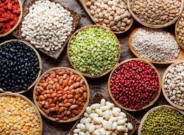

Bean

Description
Bean is the seed of one of several genera of the flowering plant family Fabaceae, which are used as vegetables for human or animal food.
They can be cooked in many different ways, including boiling, frying, and baking, and are used in many traditional dishes throughout the world.
Ingredients
Ingredients needed for preparing bean.
- Water
- Tomatoes or tomato paste.
- Onions.
- Maple.
- Spices for taste.
Steps
Steps in preparing bean.
- Rinse rice to remove dirt or unwanted particles.
- Soak or perboil rice to improve texture and expansion.
- Boil the bean in a pot.
- Add all necessary ingredients.
- Test the bean to know if it's “ready”.
- Save a scoop of bean water.
- Now serve hot.